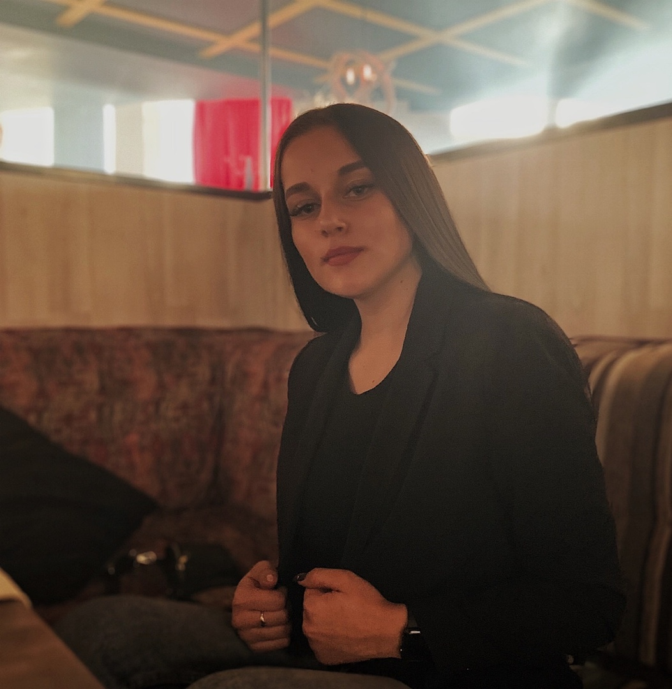

Обо мне, как о кандидате в презеденты школы
Здравствуйте, меня зовут Спицина Дарья Сергеевна и я представитель 10 «А» класса партии Главной Инициативной Демократической Республиканской Ассоциации, сокращенно ГИДРА. Я обучаюсь в МБОУСОШ №100 с 2018 года - это совсем небольшой срок, но я уже знаю как изменить многое, ведь я полна амбиций и готова к переменам.
Почему именно я?
Я считаю, что современные проблемы в школьной программе нуждаются в немедленных изменениях с современным подходом. Именно благодаря нашей партии ваша школьная жизнь может измениться к лучшему. Мы сделаем это вместе.
Мои обещания
1.
Повышение уровня образования в нашей школе.
2.
Популяризация здорового образа жизни.
3.
Внедрение программы помощи по исправлению оценок и улучшению успеваемости.
4.
Приглашение специалистов вспомогательных служб для беседы с учащимися по поводу выбора ими будущей профессии.
5.
Организация конференций активов класса и школы.
6.
Расширение культурной жизни школы (поездки, походы, экскурсии, тематические вечера с современной программой).
7.
Большее количество школьных мероприятий.
8.
Важность мнения каждого ученика.